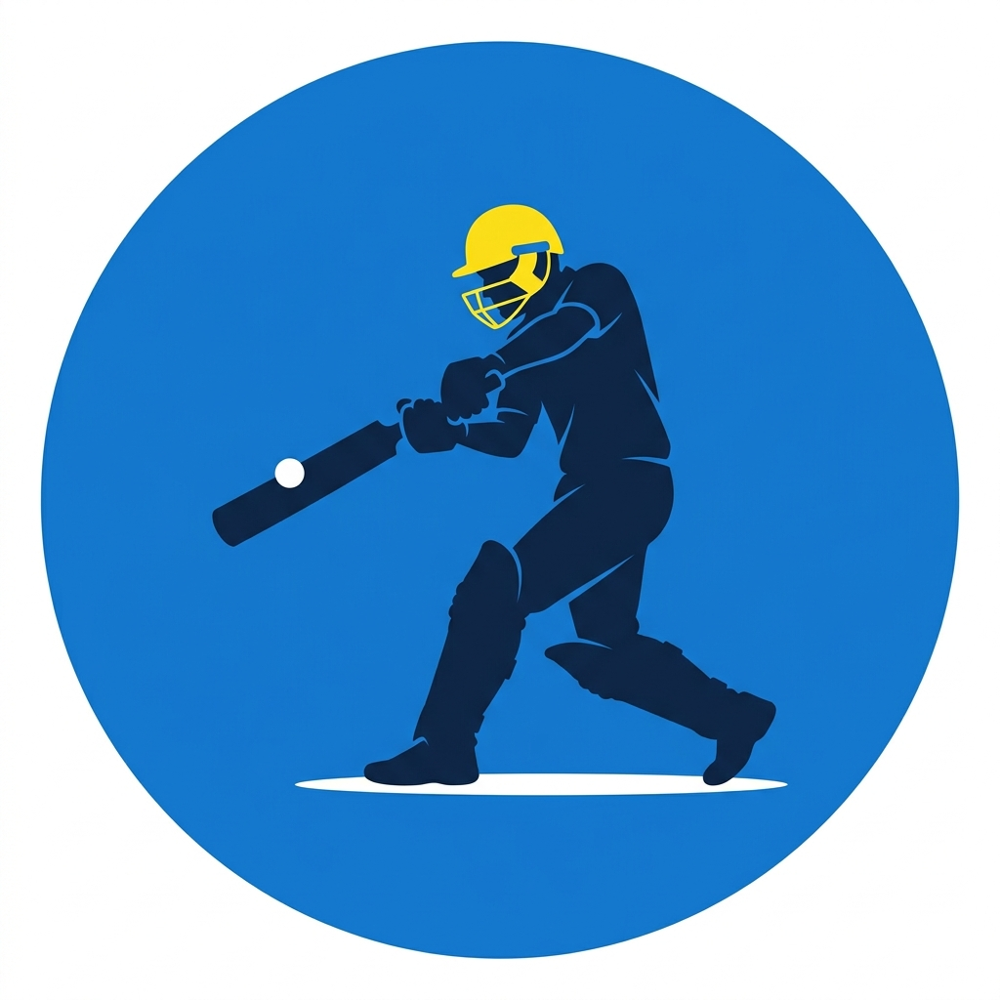
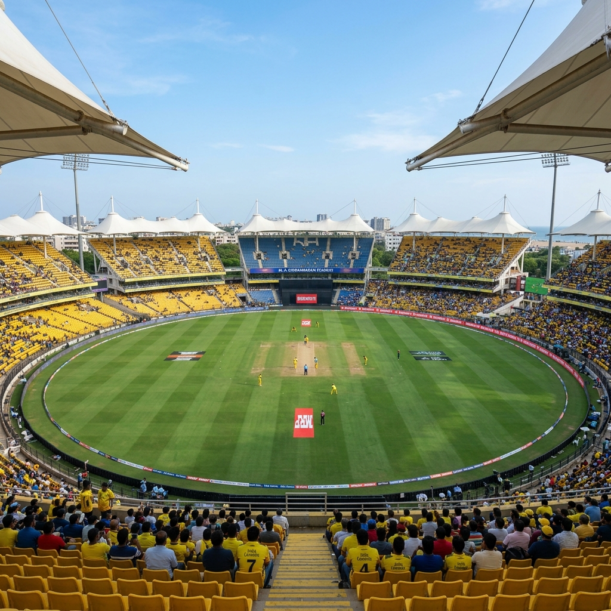

Chennai Super Kings
"Whistle Podu!" (Blow the Whistle!)
Welcome to the ultimate fan website of Chennai Super Kings (CSK), one of the most successful franchises in IPL history. With five championship titles, a stellar legacy of leadership under MS Dhoni, and an unbeatable home record at Chepauk, CSK represents passion, resilience, and true cricket spirit.
Explore TeamHall of Fame
Honoring the legendary players who became synonymous with the CSK yellow army.

MS Dhoni
Wicketkeeper-Batsman & Captain CoolThe heartbeat of Chennai. Led CSK to 5 IPL titles and established the team's calm, never-say-die attitude.
- Led CSK to 5 IPL titles (2010, 2011, 2018, 2021, 2023)
- Most matches played as IPL Captain (226)
- 2x Champions League T20 Winner
Suresh Raina
Left-Handed Batsman ("Mr. IPL")The ultimate team player and backbone of the CSK batting order at number three for over a decade.
- First player to score 5,000 runs in IPL history
- Scored 87 runs off just 25 balls in 2014 Qualifier 2
- Most consecutive matches played for CSK (158)
Ravindra Jadeja
Spin-Bowling All-RounderElectric fielder, clutch batsman, and tight off-spinner who has single-handedly turned matches for CSK.
- Hit a 6 and a 4 off the last two balls to win IPL 2023
- Took 5/16 vs Deccan Chargers in 2012
- Over 150 wickets and 2,500+ runs for CSK
Ravichandran Ashwin
Right-arm Off-SpinnerThe local Chennai spin wizard whose variety and clever bowling tactics defined CSK's early success.
- Broke into national team through CSK performances
- Won back-to-back titles in 2010 and 2011
- Pioneered the 'Carrom Ball' in the powerplay overs
Team Statistics Dashboard
Visualizing records and leading milestones in CSK history (Simple Progress Bars).
Most Runs (All-Time)
Target Reference: Suresh Raina (5,528 Runs)
Most Wickets (All-Time)
Target Reference: Dwayne Bravo (140 Wickets for CSK)
Most Sixes for CSK
Target Reference: MS Dhoni (209 Sixes)
Most Hundreds
Target Reference: Shane Watson / Murali Vijay (2 Hundreds)
Current Squad (IPL 2026)
Filter by typing in the search box or select a specific category. Export the squad data to CSV!
Ruturaj Gaikwad
Opening Batsman & CaptainA classy opening batsman who took over the captaincy reins. He timing and composure define his batting.
Ajinkya Rahane
Middle-Order BatsmanAn experienced domestic batsman who found a new aggressive batting style playing in CSK colors.
Shivam Dube
Left-Handed BatsmanAn explosive, tall batsman known for hitting massive sixes, particularly targeting spin bowling.
MS Dhoni
Wicketkeeper-BatsmanThe Thala of Chennai, playing as finisher and guiding the bowlers from behind the stumps.
Devon Conway
Wicketkeeper-BatsmanA consistent Kiwi opener who can anchor the innings and hit spin with sweeps and reverse-sweeps.
Ravindra Jadeja
Spin-Bowling All-RounderCSK's premium all-rounder. Quick over rate spinner and an incredibly destructive late-overs finisher.
Mitchell Santner
Spin-Bowling All-RounderEconomical left-arm spinner who provides excellent control and possesses handy hitting abilities.
Rachin Ravindra
All-RounderA highly talented youngster who bats aggressively at the top order and bowls useful slow left-arm spin.
Matheesha Pathirana
Fast BowlerNicknamed "Baby Malinga" due to his slingy action. An exceptional death bowler specializing in yorkers.
Maheesh Theekshana
Spin BowlerA mystery spinner with multiple variations, capable of bowling key overs both early and late in matches.
Tushar Deshpande
Fast BowlerSkilled pace bowler who takes wickets in the powerplay. CSK's highest wicket-taker in 2023 season.
Greatest Victories
Relive the most memorable match results that CSK pulled out from difficult situations.
IPL 2023 Final Thriller
Rain delayed the final, forcing a reserve day and a revised DLS target of 171 in 15 overs. With 10 runs required off the final two deliveries, Ravindra Jadeja smashed a six and a four off Mohit Sharma to clinch CSK's 5th title.
- Devon Conway: 47 (25 balls)
- Shivam Dube: 32* (21 balls)
- Ravindra Jadeja: 15* (6 balls) & 1/38
| GT Score | 214/4 (20 overs) |
| CSK Score (DLS) | 171/5 (15 overs) |
| Margin | CSK won by 5 wickets |
IPL 2018 Final Comeback
Returning to the tournament after a 2-year suspension, CSK made a sensational run. In the grand finale, Shane Watson overcame a slow start (0 off his first 10 balls) to blast an unbeaten 117 off 57 balls to comfortably chase 179.
- Shane Watson: 117* (57 balls)
- Lungi Ngidi: 1/26 (4 overs)
- Suresh Raina: 32 (24 balls)
| SRH Score | 178/6 (20 overs) |
| CSK Score | 181/2 (18.3 overs) |
| Margin | CSK won by 8 wickets |
IPL 2011 Final Dominance
Playing in front of a passionate home crowd, CSK became the first team to defend an IPL title. Murali Vijay played a stellar knock of 95 and put on a 159-run opening partnership with Mike Hussey to crush RCB.
- Murali Vijay: 95 (52 balls)
- Michael Hussey: 63 (45 balls)
- Ravichandran Ashwin: 3/16 (4 overs)
| CSK Score | 205/5 (20 overs) |
| RCB Score | 147/8 (20 overs) |
| Margin | CSK won by 58 runs |
IPL 2010 Final - First Title
After finishing as runners-up in 2008, CSK won their first title at Navi Mumbai. MS Dhoni's smart tactical field placements (placing a straight mid-off for Pollard) choked MI's run chase of 169.
- Suresh Raina: 57* (35 balls) & 1/21
- Albie Morkel: 15 (6 balls) & 1/20
- Shadab Jakati: 2/44 (3 overs)
| CSK Score | 168/5 (20 overs) |
| MI Score | 146/9 (20 overs) |
| Margin | CSK won by 22 runs |
Team Records
Individual milestones and team records set by the Super Kings over the seasons.
Highest Partnership
159 Runs
vs RCB, 2011 FinalFastest Fifty
16 Balls
vs PBKS, 2014Fastest Hundred
46 Balls
vs RR, 2010Best Bowling Figures
5/16
vs Deccan Chargers, 2012Most POTM Awards
15 Awards
For CSK matchesMost Sixes (Season)
37 Sixes
In the 2014 SeasonMost Runs (Season)
733 Runs
Orange Cap (2013)Most Wickets (Season)
32 Wickets
Purple Cap (2013)Home Stadium
The fortress of the Chennai Super Kings: Chepauk Stadium.

M. A. Chidambaram Stadium (Chepauk)
- Location: Chepauk, Chennai, Tamil Nadu, India
- Capacity: 50,000 Spectators
- Established: 1916 (One of the oldest in India)
- Pitch Type: Traditionally slow, dry, and spin-friendly
Affectionately called "Chepauk" or "The Lion's Den," this stadium is famous for its sea breeze and the sea of yellow fans that fills every corner during home games. The Chennai crowd is also renowned across the cricket world for being incredibly knowledgeable and appreciative of good cricket, even when played by opposition teams.
Trophy Cabinet
A proud history of silverware and accomplishments over the years.
IPL Titles
5 Times
2010, 2011, 2018, 2021, 2023
Joint most titles in IPL historyRunner-Up Finishes
5 Times
2008, 2012, 2013, 2015, 2019
Most final appearances by any teamChampions League T20
2 Titles
2010, 2014
Aromatic global tournaments wonIPL Trivia Quiz
Test your knowledge about Chennai Super Kings and see if you are a true Super Fan!
CSK Fan Trivia Challenge
You will be asked 5 multiple-choice questions. Answer correctly to prove your loyalty!
What is the tagline of Chennai Super Kings?
Quiz Completed!
You scored 4 out of 5